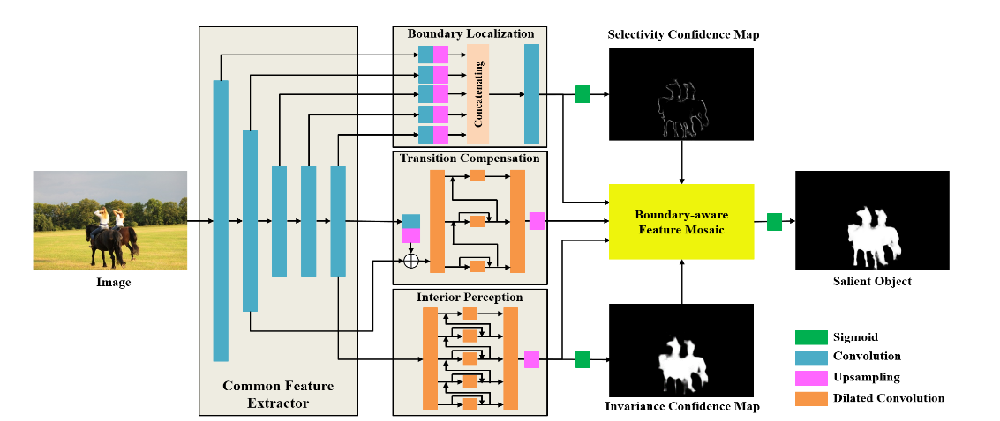
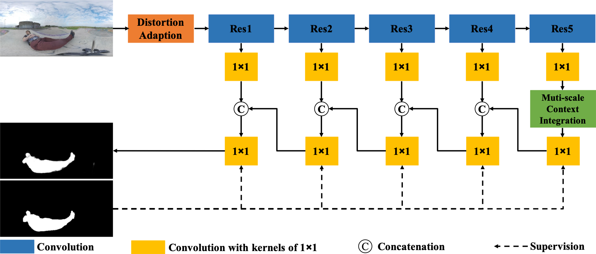
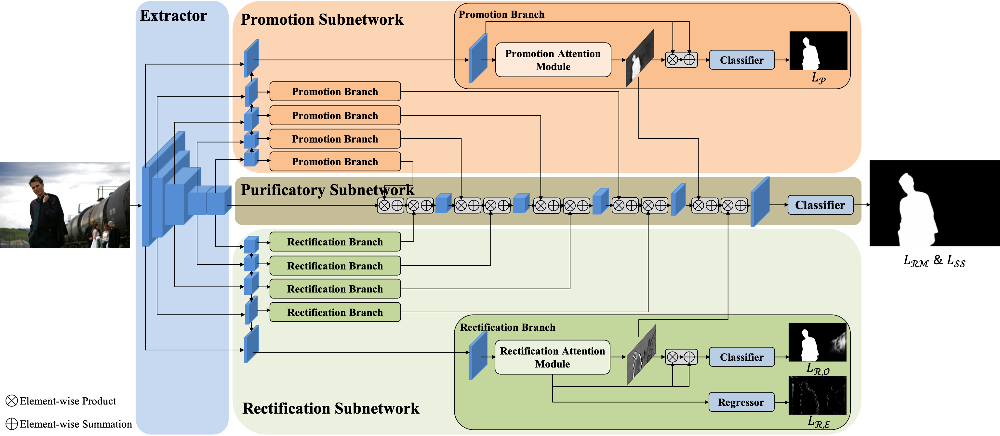
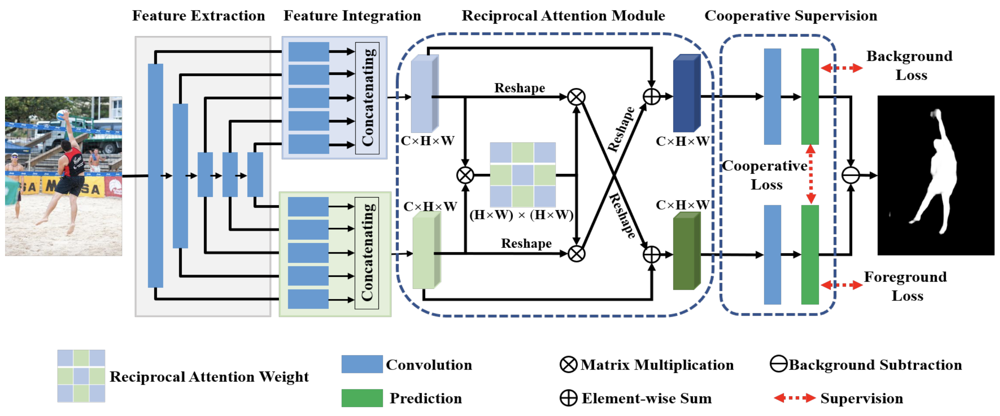
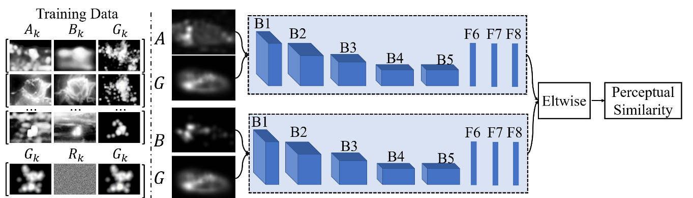
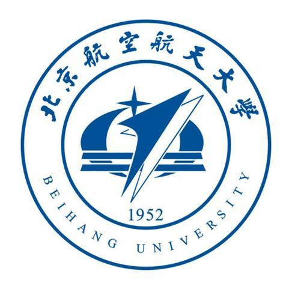

About
I currently work as an algorithm engineer at Meituan-Dianping Group. I am broadly interested in solving real-world visual understanding problems with optimization/learning-based algorithms. Recently, I am interested in developing learning and optimization frameworks for image segmentation.
I obtained my Master's Degree (CS) in State Key Laboratory of Virtual Reality Technology and Systems, SCSE, Beihang University (BUAA), in Jan. 2020. Before that, I received Bachelor's degree (CS) from SCSE, Northeastern University (NEU), in Jul. 2017.
This is my [CV].
News
[2020-02-17] I join Meituan-Dianping Group as a algorithm engineer.
[2019-12-10] I pass my Master Dissertation defense.
[2019-11-19] One paper on 360$^\circ$ salient object detection is accepted by J-STSP.
[2019-07-22] One paper on salient object detection is accepted by ICCV 2019.

Selectivity or Invariance: Boundary-aware Salient Object Detection.
Jinming Su, Jia Li, Yu Zhang, Changqun Xia and Yonghong Tian.
IEEE International Conference on Computer Vision (ICCV), 2019
[
PDF]
[
Project]

Distortion-adaptive Salient Object Detection in 360$^\circ$ Omnidirectional Images.
Jia Li, Jinming Su, Changqun Xia and Yonghong Tian.
IEEE Journal of Selected Topics in Signal Processing (J-STSP)
[
PDF]
[
Project]

Salient Object Detection with Purificatory Mechanism and Structural Similarity Loss.
Jia Li, Jinming Su, Changqun Xia and Yonghong Tian.
Under review by TIP
[
PDF]
Stay Focused While Driving: Exploring Task-aware Salient Object Detection via Knowledge Transfer.
Jinming Su, Jia Li, Changqun Xia and Yonghong Tian.

Exploring Reciprocal Attention for Salient Object Detection by Cooperative Learning.
Changqun Xia, Jia Li, Jinming Su and Yonghong Tian.
[
arXiv]

Learning a saliency evaluation metric using crowdsourced perceptual judgments.
Changqun Xia, Jia Li, Jinming Su and Ali Borji.
[
arXiv]
Projects
I specialize in computer vision with deep/machine learning learning. In addition, I am interested in some engineering practices, especially some open source projects related to deep/machine learning. Moreover, I am also interested in basic computer algorithm, such as data structure, program optimization, etc.
- A project for source code analysis of Caffe, which is helpful to understand the pipeline of Caffe running. [Github]
- A public learning_note on computer vision is under construction, including mathematics, machine learning and deep learning. This note will solve many difficult derivation problems.[Github]
- A web application on salient object detection (SOD) of 360$^\circ$ omnidirectional images will be publicly available. In this project, everyone can upload omnidirectional images, browse images by drgging as well as prediction of SOD of these images on any platform with a browser.[Release later]
- An old blog for anything related to computer science can be found, which has 300+ posters written from 2014 to 2018. I will reorganize this blog if I have time later.[Csdn blog]
Education

Beihang University (BUAA), Beijing, China
2017 - 2020
M.S. in Computer Science and Technology, ranked 9/303 (3.0%)
- State Key Laboratory of Virtual Reality Technology and Systems, SCSE
- Dissertation: 场景和任务引导的图像显著内容解析 (top 14/303)
- Advisor:
Jia Li [
CVTEAM]
Northeastern University (NEU), Shenyang, China
2013 - 2017
B.S. in Computer Science and Technology, ranked 10/258 (3.9%)
- Dissertation: 基于移动终端的室外场景语义分割方法与系统 (1/258)
- Recommended for admission to Beihang University without exams